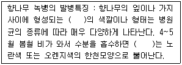
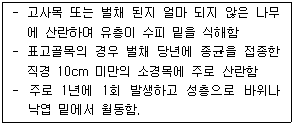
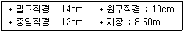
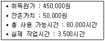
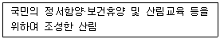
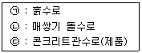
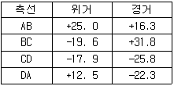
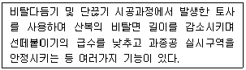

산림기사 (2015-08-16 기출문제)
1과목: 조림학
1. 소나무의 지역품종으로 줄기가 곧고 수관이 좁고 가지가 가늘고 지하고가 높은 것은?
- 동북형
- 금강형
- 안강형
- 중남부평지형
(정답률: 92%)

2. 수목종자의 발아촉진 방법과 해당 수종을 연결한 것으로 옳지 않은 것은?
- 채파 - 향나무
- 황산처리 - 옻나무
- 침수처리 – 삼나무
- 노천매장 - 단풍나무
(정답률: 66%)
3. 왜림작업으로 갱신하기 적당하지 않은 수종은?
- 잣나무
- 오리나무
- 신갈나무
- 물푸레나무
(정답률: 61%)
4. 종자 발아를 위해 후숙이 필요한 수종은?
- Salix koreensis AND.
- Taxus cuspidata S. et Z.
- Quercus serrata THUNB.
- Ulmus davidiana var. japonica NAKAI
(정답률: 53%)
5. 일반적으로 봄에 종자가 성숙하는 수종은?
- 소나무
- 향나무
- 미루나무
- 동백나무
(정답률: 56%)
6. 편백과 화백의 공통점으로 옳지 않은 것은?
- 측백속이다.
- 일가화 수종이다.
- 일본에서 도입되었다.
- 내음성은 중성에 가깝다.
(정답률: 67%)
7. 풀베기에 대한 설명으로 옳은 것은?
- 잡초가 다 자란 9월 이후에 실시한다.
- 소나무는 다른 수종보다 늦게 실시한다.
- 묘목을 심은 뒤 1~2년 동안에만 실시한다.
- 한해나 풍해가 우려되는 조림지는 둘레베기를 하는 것이 좋다.
(정답률: 89%)
8. 삽목 발근이 잘 되는 수종으로만 짝지어진 것은?
- 밤나무, 오리나무
- 무궁화, 배롱나무
- 호두나무, 은행나무
- 신갈나무, 쥐똥나무
(정답률: 66%)
9. 생가지치기를 할 경우 절단부위가 썩을 위험성이 큰 수종으로만 짝지어진 것은?
- 편백, 자작나무
- 소나무, 버드나무
- 단풍나무, 물푸레나무
- 일본잎갈나무, 벚나무
(정답률: 82%)
10. 2-1로 표시된 묘목의 설명으로 옳은 것은?
- 2년생 실생묘
- 3년생 이식묘
- 3년생 접목묘
- 3년생 삽목묘
(정답률: 85%)
11. 균근에 대한 설명으로 옳지 않은 것은?
- 참나무류에 형성되는 균근은 내생균근이다.
- 소나무류에 형성되는 균근은 외생균근이다.
- 토양의 비옥도와 균근의 형성률은 반비례한다.
- 수목의 뿌리가 토양 중에 있는 균류와 공생하는 것이다.
(정답률: 46%)
12. 잣나무에 대한 설명으로 옳지 않은 것은?
- 암수한그루이다.
- 심근성 수종이다.
- 잎 뒷면에 흰 기공선을 가지고 있다.
- 어려서는 음수이고 자라면서 햇빛 요구량이 줄어든다.
(정답률: 85%)
13. 종자가 결실 주기가 5년 이상인 수종은?
- Abies holophylla Max.
- Larix leptolepis GORDON
- Cryptomeria japonica D. DON
- Pinus densiflora SIEB. et ZUCC
(정답률: 77%)
14. 양묘과정 중 해가림 시설을 해야 하는 수종으로만 짝지어진 것은?
- 아까시나무, 삼나무, 편백
- 잣나무, 소나무, 사시나무
- 소나무, 아까시나무, 곰솔
- 가문비나무, 잣나무, 전나무
(정답률: 79%)
15. 산벌작업의 특징으로 옳지 않은 것은?
- 임지보호 효과가 있다.
- 음수의 갱신이 가능하다.
- 개벌작업에 비해 기술요구도가 낮다.
- 예비벌, 하종벌, 후벌 순서로 진행한다.
(정답률: 80%)
16. 수목의 목부 중 수액이동 조직이 아닌 것은?
- 수(pith)
- 도관(vessel)
- 세포막공(pit)
- 가도관(tracheid)
(정답률: 68%)
17. 질소결핍 증상으로 주로 나타나는 현상은?
- T/R률의 증가
- 겨울눈의 조기 형성
- 성숙한 잎의 황화현상
- 모잘록병 발생율의 증가
(정답률: 80%)
18. 접수와 대목의 굵기가 비슷하며 조직이 유연하고 굵지 않을 때 적합한 접목법은?
- 복접
- 교접
- 기접
- 설접
(정답률: 76%)
19. 소나무와 곰솔을 비교한 설명으로 옳지 않은 것은?
- 곰솔의 침엽은 굵고 길다.
- 소나무의 겨울눈은 굵고 회백색이다.
- 소나무 수피는 적갈색이고 곰솔은 암흑색이다.
- 침엽 수지도가 곰솔은 중위이고 소나무는 외위이다.
(정답률: 74%)
20. C3식물에서 CO2를 받아들이는 첫 번째 효소는?
- PEP 효소
- Malic 효소
- Pyruvic 효소
- Rubisco 효소
(정답률: 70%)
2과목: 산림보호학
21. 다음 중 내화성 수종이 아닌 것은?
- 삼나무
- 마가목
- 은행나무
- 느티나무
(정답률: 68%)
22. 밤나무혹벌에 대한 설명으로 옳지 않은 것은?
- 1년에 1회 발생하며 눈의 조직 내에서 유충의 형태로 월동한다.
- 천적으로는 노란꼬리좀벌, 남색긴꼬리좀벌, 상수리좀벌 등이 알려져 있다.
- 유충기를 벌레혹에서 보낸 후에 탈출하여 번데기는 수피 틈새에 형성한다.
- 피해목은 개화 및 결실이 잘 되지 않고, 피해가 누적되면 고사하는 경우가 많다.
(정답률: 65%)
23. 소나무재선충병에 대한 설명으로 옳지 않은 것은?
- 북방수염하늘소에 의해 발병하기도 한다.
- 감염 우려 지역은 아바멕틴 유제를 사용하여 나무주사를 실시한다.
- 방제법으로 항공살포, 피해목 훈증, 위생간벌 등이 있지만 토양관주는 효과가 없다.
- 피해 입은 소나무는 침엽이 아래로 처지고 황색과 갈색으로 변색되면서 고사된다.
(정답률: 77%)
24. 다음( )안에 들어갈 용어로 옳은 것은?

- 녹포자기
- 겨울포자퇴
- 녹병정자기
- 여름포자퇴
(정답률: 52%)
25. 다음 중 여름포자 세대를 형성하지 않는 것은?
- 소나무 혹병
- 포플러 잎녹병
- 오리나무 잎녹병
- 배나무 붉은별무늬병
(정답률: 64%)
26. 염풍(salt wind)에 의한 피해가 아닌 것은?
- 염분이 잎 뒷면의 기공으로 침입하여 생리적 작용을 저해한다.
- 염풍의 해가 심하면 나뭇잎이 갈색 또는 흑색으로 변하여 고사한다.
- 토양에 스며든 염분으로 인하여 토양 내 유기물 분해가 너무 빨리 일어난다.
- 나뭇잎에 부착된 NaCl이 원형질로부터 수분을 탈취하여 원형질 분리를 일으킨다.
(정답률: 80%)
27. 흰가루병에 대한 설명으로 옳지 않은 것은?
- 자낭균으로 자낭구를 형성한다.
- 물푸레나무, 밤나무 등에 발병한다.
- 무성으로 분생포자를 많이 만들어 내는 완전사물기생균이다.
- 식물 잎에 밀가루를 뿌려 놓은 것처럼 흰색의 균사가 자라서 덮는 것이다.
(정답률: 67%)
28. 수목 생장 시기인 봄에 내린 서리에 의한 피해는?
- 만상
- 춘상
- 조상
- 추상
(정답률: 79%)
29. 다음 설명에 해당하는 해충은?

- 알락하늘소
- 향나무 하늘소
- 포플러하늘소
- 털두꺼비하늘소
(정답률: 57%)
30. 세균이 식물체 내에 침입 가능한 통로가 아닌 것은?
- 수공
- 각피
- 피목
- 밀선
(정답률: 80%)
31. 잣나무 털녹병균에 대한 설명으로 옳은 것은?
- 중간기주에 기주교대를 하는 이종 기생균이다.
- 중간기주에 기주교대를 하는 동종 기생균이다.
- 중간기주에 기주교대를 하지 않는 이종기생균이다.
- 중간기주에 기주교대를 하지 않는 동종기생균이다.
(정답률: 73%)
32. 솔잎혹파리의 기생성 천적이 아닌 것은?
- 솔잎혹파리먹좀벌
- 혹파리원뿔먹좀벌
- 혹파리살이먹좀벌
- 혹파리등뿔먹좀벌
(정답률: 80%)
33. 모잘록병 방제 방법으로 옳지 않은 것은?
- 묘상이 과습하지 않도록 한다.
- 복토가 너무 두껍지 않도록 한다.
- 병이 심한 묘포지는 돌려짓기를 한다.
- 인산비료보다는 질소비료를 충분히 준다.
(정답률: 90%)
34. 천연기념물로 지정된 조류가 아닌 것은?
- 따오기
- 꾀꼬리
- 크낙새
- 두루미
(정답률: 64%)
35. 외국에서 유입된 해충이 아닌 것은?
- 솔잎혹파리
- 소나무 재선충
- 잣나무넓적잎벌
- 버즘나무방패벌레
(정답률: 59%)
36. 1900년경 동양에서 수입된 밤나무에 병원균이 묻어 들어가 미국 동부지방에 피해를 준 수목병으로 배수가 불량한 지역의 밤나무가 형성층에 손상을 입은 경우 잘 발생하는 것은?
- 밤나무 잉크병
- 밤나무 시들음병
- 밤나무 흰가루병
- 밤나무 줄기마름병
(정답률: 84%)
37. 다음 각 해충이 주로 가해하는 수종으로 옳지 않은 것은?
- 미국흰불나방 : 소나무류
- 광릉긴나무좀 : 참나무류
- 복숭아심식나무 : 사과나무
- 버즘나무방패벌레 : 물푸레나무
(정답률: 80%)
38. 봄에 진딧물 알에서 부화한 애벌레를 무엇이라 하는가?
- 유충
- 간부
- 간모
- 약충
(정답률: 63%)
39. 주로 종실을 가해하는 해충이 아닌 것은?
- 밤바구미
- 솔알락명나방
- 복숭아명나방
- 참나무재주나방
(정답률: 81%)
40. 다음 중 세균에 의한 수목 병해는?
- 청변병
- 불마름병
- 모잘록병
- 그을음병
(정답률: 57%)
3과목: 임업경영학
41. 산림의 생산기간에 대한 설명으로 옳지 않은 것은?
- 회귀년이 짧은 경우 단위면적에서 벌채될 재적이 많다.
- 벌기령과 벌채령이 일치할 때 벌기령을 법정벌기령이라 한다.
- 개량기는 개벌작업을 하는 산림에 적용되는 기간이며 정리기라고도 한다.
- 윤벌기란 보속작업에 있어서 한 작업급 내의 모든 임분을 1순벌하는데 필요한 기간이다.
(정답률: 65%)
42. 다음 조건에서 국내산 원목의 재적검량방법에 의해 계산한 벌채목의 재적(m3)은?

- 0.099
- 0.167
- 0.198
- 0.218
(정답률: 56%)
43. 임업경영 성과 분석을 위한 각 요소에 대한 설명으로 옳지 않은 것은?
- 임가소득은 임업소득과 임업외소득으로 구성된다.
- 임업순수익은 가족임금추정액을 제외한 임업소득이다.
- 임업소득은 임업경영비를 제외한 임업조수익이다.
- 임업의존도는 임가소득을 임업소득으로 나눈 값을 백분율로 표현한 것이다.
(정답률: 57%)
44. 표준목법에 의한 임분 재적 측정 방법으로, 전 임목을 몇 개의 계급으로 나누고 각 계급의 본수를 동일하게 하여 표준목을 선정하는 것은?
- 단급법
- Urich법
- Hartig법
- Draudt법
(정답률: 80%)
45. 산림교육의 활성화에 관한 법률에 의한 산림교육전문가가 아닌 것은?
- 숲해설가
- 유아숲지도사
- 자연환경해설사
- 숲길체험지도사
(정답률: 59%)
46. 매각한 임목의 실제 판매가격이 아니라 매각 임목의 육림비 누적액을 의미하는 것은?
- 매각액
- 성장액
- 판매액
- 성장액의 내부보유율
(정답률: 53%)
47. 산림을 하나의 생물적 유기체로 간주하여 지속적인 경영을 중시한 산림경영 사상을 무엇이라 하는가?
- 생산성 사상
- 항속림 사상
- 보속성 사상
- 법정림 사상
(정답률: 70%)
48. 임목재적을 측정하기 위한 흉고형수에 대한 설명으로 옳지 않은 것은?
- 지위가 양호할수록 형수가 작다.
- 수고가 작을수록 형수는 작아진다.
- 연령이 많아질수록 형수는 커진다.
- 흉고직경이 작아질수록 형수는 커진다.
(정답률: 68%)
49. 다음 조건에서 작업시간비례법으로 계산한 기계톱의 총 감가상각비는?

- 12,500원
- 17,500원
- 22,500원
- 35,000원
(정답률: 72%)
50. 벌기의 임분 재적 300m3, 윤벌기 50년, 산림면적 150ha인 경우의 법정축적은?
- 2,250m3
- 4,500m3
- 22,500m3
- 45,000m3
(정답률: 62%)
51. 임업경영의 형태 중 개벌경영을 해체하고 모든 자본과 노동을 통합하여 공동화하는 협업경영 체계에서 발생하기 쉬운 문제점으로 옳지 않은 것은?
- 불충분한 시장조사로 인한 실패
- 가장 낮은 수준으로 노동 평준화
- 불필요한 신기술 개발로 인한 자본 낭비
- 필요 이상의 과잉 투자로 인한 수익성 저하
(정답률: 65%)
52. 산림문화·휴양에 관한 법률에 정의된 것으로 다음 내용에 해당하는 것은?

- 숲길
- 산림욕장
- 자연휴양림
- 치유의 숲
(정답률: 78%)
53. 윤벌기가 50년이고 회귀년이 10년인 산림의 법정택벌률식에 의한 택벌률은?
- 10%
- 20%
- 30%
- 40%
(정답률: 56%)
54. 산림휴양림의 경관 관리 방법으로 경관 연출에 해당하지 않은 것은?
- 계절감
- 다양성
- 보도의 액센트
- 차단공간 조성
(정답률: 74%)
55. 산림기본법에 의한 산림기본계획 및 지역산림계획에 따라 국유림종합계획은 몇 년마다 수립·시행하여야 하는가?
- 5년
- 10년
- 15년
- 20년
(정답률: 63%)
56. 산림평가 방법 중 비교법에 대한 설명으로 옳지 않은 것은?
- 간편하고 이해하기 쉽다.
- 감정인의 경험 의존도가 높다.
- 시장에서 실제로 매매되는 가격을 평가기준으로 한다.
- 시점수정, 사정보정, 개별요인 및 지역요인의 비교가 용이하다.
(정답률: 47%)
57. 산림자원의 조성 및 관리에 관한 법률에 의한 사유림경영계획구의 유형이 아닌 것은?
- 특별경영계획구
- 일반경영계획구
- 협업경영계획구
- 기업경영림계획구
(정답률: 70%)
58. 소반의 지종구분에서 제지에 대한 설명으로 옳은 것은?
- 관련 법률에 의거 지정된 법정임지
- 수관점유면적 비율이 30% 이하인 임분
- 수관점유면적 비율이 30% 초과하는 임분
- 암석 및 석력지로서 조림이 불가능한 임지
(정답률: 63%)
59. 임령에 따라 적용한 임목의 평가방법으로 가장 적합한 것은?
- 유령림의 임목 : 비용가
- 중령림의 임목 : 기망가
- 벌기 이후의 임목 : Glaser법
- 벌기 미만 장령림의 임목 : 매매가
(정답률: 80%)
60. 치유의 숲에 설치하는 시설이 아닌 것은?
- 체육시설
- 편익시설
- 위생시설
- 산림치유시설
(정답률: 70%)
4과목: 임도공학
61. 임도의 성토사면에 있어서 붕괴가 일어날 가능성이 적은 경우는?
- 함수량이 증가할 때
- 공극수압이 감소될 때
- 동결 및 융해가 반복될 때
- 토양의 점착력이 약해질 때
(정답률: 84%)
62. 임도개설과 같이 폭이 좁고 길이가 상대적으로 긴 구간에서 발생되는 토량을 산출하기 위하여 사용되는 토적 계산식으로 가장 적합하지 않은 것은?
- 주상체공식
- 중앙단면적법
- 양단면적평균법
- 직사각형 기둥법
(정답률: 59%)
63. 비탈면 기울기가 1:1. 2로 표시된 설계도의 경사도(%)는?
- 13
- 43
- 83
- 123
(정답률: 61%)
64. 토목공사용 굴착기의 앞부속장치로 옳지 않은것은?
- crane
- pile driver
- clam lines
- drag shovel
(정답률: 68%)
65. 흙의 기본성질에 대한 설명으로 옳지 않은 것은?
- 공극비는 흙입자의 용적에 대한 공극의 용적비이다.
- 포화도는 흙입자의 중량에 대한 수분의 중량비를 백분율로 표시한 것이다.
- 공극률은 흙덩이 전체의 용적에 대한 간극의 용적비를 벡분율로 표시한 것이다.
- 무기질의 흙덩이는 고체(흙입자). 액체(물), 기체(공기)의 세 가지 성분으로 구성된다.
(정답률: 62%)
66. 어떤 두 측점간의 측량 결과 방위각이 127°30′일 때 역방위각은?
- 307°30′
- 127°30′
- 37°30′
- 19°30′
(정답률: 82%)
67. 임도의 곡선을 결정할 때 외선길이가 10.0m 이고 교각이 90°인 경우 곡선반지름은?
- 약 14m
- 약 24m
- 약 34m
- 약 44m
(정답률: 50%)
68. 지모측량이랑 토지의 기복 상태를 측정하여 도시화하는 것이다. 다음 중 지모측량에 있어서 지성선에 속하지 않는 것은?
- 철선
- 합수선
- 방향변환선
- 경사변환선
(정답률: 45%)
69. 임도에서 합성기울기와 관련이 있는 조합은?
- 횡단기울기와 편기울기
- 종단기울기와 역기울기
- 편기울기와 곡선반지름
- 종단기울기와 횡단기울기
(정답률: 86%)
70. 임도측량 방법으로 영선측량과 중심선측량을 비교한 설명으로 옳지 않은 것은?
- 영선은 절토작업과 성토작업의 경계선이 되기도 한다.
- 산지경사가 완만할수록 중심선이 영선보다 안쪽에 위치하게 된다.
- 산지경사가 45% ~ 55% 정도일 때 중심선과 영선이 거의 일치한다.
- 중심선 측량은 지형상태에 따라 파상지형의 소능선과 소계곡을 관통하며 진행된다.
(정답률: 73%)
71. 임도 내 교량에 적용되는 종단기울기는? (단, 특별한 장소 제외)
- 적용하지 아니한다.
- 2% 미만
- 4% 미만
- 6% 미만
(정답률: 65%)
72. 반출할 목재의 길이가 16m, 도로의 폭이 8m 일 때 최소곡선반지름은?
- 8m
- 14m
- 16m
- 32m
(정답률: 67%)
73. 장마기가 지난 후 배수로의 토사를 제거하기에 가장 적합한 작업 기계는?
- 소형 백호우
- 진동 로올러
- 소형 불도저
- 모터 그레이더
(정답률: 72%)
74. 수로의 평균유속을 구하는 매닝(Manning)공식에서 조도계수가 작은 것부터 큰 것의 순서로 올바르게 나열된 것은?

- ㉠ - ㉡ - ㉢
- ㉠ - ㉢ - ㉡
- ㉢ - ㉠ - ㉡
- ㉢ - ㉡ - ㉠
(정답률: 46%)
75. 임도망 배치 모델의 적정성을 분석하기 위한 평가지표로 평균집재거리가 있다. 아래의 조건에서 평균집재거리가 가장 짧아 노선 배치가 가장 양호하다고 평가할 수 있는 것은?
- 임도밀도=8m/ha, 우회계수=1.0
- 임도밀도=8m/ha, 우회계수=1.2
- 임도밀도=10m/ha, 우회계수=1.0
- 임도밀도=10m/ha, 우회계수=1.2
(정답률: 61%)
76. 절성토사면에 있어서 소단에 대한 설명으로 옳지 않은 것은?
- 절·성토의 안정성을 높인다.
- 사면에서 흘러내리는 사면침식을 줄인다.
- 필요에 따라 식생이나 배수구를 설치한다.
- 붕괴 방지를 위해 유지보수 작업원의 발판으로 이용할 수 없다.
(정답률: 79%)
77. 트래버스 계산 결과 다음과 같을 때 배횡거법으로 구한 다각형의 면적(m2)?

- 618
- 718
- 818
- 918
(정답률: 39%)
78. 임도에서 최소 종단기울기를 유지해야 하는 이유로 가장 옳은 것은?
- 시공시 성토면의 토량을 확보하여 시공비를 절약하기 위해
- 시공비용이 높기 때문에 벌채점까지 신속히 접근시키기 위해
- 임도 표면에 잡초들의 발생을 예방하여 유지비를 절약하기 위해
- 임도 표면의 배수를 용이하게 하여 임도 파손을 막고 유지비를 절약하기 위해
(정답률: 82%)
79. 노면 또는 땅깎기 비탈면에 설치하는 배수시설로써 길어깨와 비탈사이에 종단방향으로 설치하는 것은?
- 옆도랑
- 겉도랑
- 속도랑
- 빗물받이
(정답률: 73%)
80. 다음 중 정지 및 전압 전용기계가 아닌 것은?
- tamper
- trencher
- motor grader
- vibrating compactor
(정답률: 74%)
5과목: 사방공학
81. 다음에 설명하는 공법은?

- 골막이
- 누구막이
- 기슭막이
- 땅속 흙막이
(정답률: 73%)
82. 임도계획선에 인접된 작은 계곡에서 구곡침식이 심할 때 침식안정을 위해 가장 적합한 공작물은?
- 떼 누구막이
- 편책 기슭막이
- 돌망태 골막이
- 콘크리트 옹벽
(정답률: 67%)
83. 평균유속 0.5m/s로 5초 동안에 10m3의 물을 유송하는 수로의 횡단면적은?
- 2m2
- 4m2
- 10m2
- 20m2
(정답률: 61%)
84. 콘그리트의 방수성을 높일 목적으로 사용되는 혼화재료가 아닌 것은?
- 규산나트륨
- 파라핀 유제
- 플라이 애시
- 아스팔트 유제
(정답률: 74%)
85. 불투과형 중력식 사방댐의 형태인 흙댐의 시공요령으로 내심벽을 만들 때 사용하는 것은?
- 모래
- 자갈
- 점토
- 호박돌
(정답률: 62%)
86. 해안사방의 사구조성공법에 해당하지 않는 것은?
- 파도막이
- 모래덮기
- 퇴사울세우기
- 정사울세우기
(정답률: 72%)
87. 돌쌓기 배치 방법으로 잘못된 쌓기법이 아닌 것은?
- 포갠돌
- 이마대기
- 여섯에움
- 새입붙이기
(정답률: 62%)
88. 해안사방 공사의 주요 공종에 해당하지 않는 것은?
- 둑쌓기
- 사초심기
- 모래담쌓기
- 구정바자얽기
(정답률: 52%)
89. 강우에 의한 침식의 발달과정 순서로 옳은 것은?
- 구곡침식 → 면상침식 → 누구침식
- 구곡침식 → 누구침식 → 면상침식
- 면상침식 → 구곡침식 → 누구침식
- 면상침식 → 누구침식 → 구곡침식
(정답률: 83%)
90. 집수구역이 넓고 경사가 급한 산비탈에 주로 적용하는 배수로 공법은?
- 떼 수로공
- 과식 수로공
- 막논돌 수로공
- 돌붙임 수로공
(정답률: 76%)
91. 중력침식유형 중 발생 속도가 가장 느린 것은?
- 토석류
- 산사태
- 땅밀림
- 급경사지 붕괴
(정답률: 86%)
92. 물이 계류 바닥과 접촉하면서 흐르는 동안 발생하는 단위면적당 마찰력을 나타내며, 흐름방향의 물의 단위중량과 크기는 같고 방향이 반대인 것은?
- 활동력
- 접촉력
- 유출력
- 소류력
(정답률: 72%)
93. 비탈옹벽공법의 시공방법으로 옳지 않은 것은?
- 뒷채움 토양은 충분히 전압되도록 한다.
- 옹벽 몸체는 한번에 타설하지 않고 여러층을 나누어 콘크리트를 타설한다.
- 뒷채움 부분에는 물이 침입하지 않도록 하며, 물이 침입할 경우에는 신속히 배수한다.
- 직접기초시공에는 옹벽 밑판과 지반사이에 기초 쇄석이나 모르타르를 삽입하여 미끄러짐을 방지한다.
(정답률: 70%)
94. 계류의 유속과 흐름방향을 조절할 수 있도록 둑이나 계안으로부터 돌출하여 설치하는 것은?
- 수제
- 구곡막이
- 바닥막이
- 기슭막이
(정답률: 85%)
95. 계획홍수량이 200~500m3/sec인 경우 둑높이 여유고의 기준은?
- 0.8m 이상
- 1.0m 이상
- 1.2m 이상
- 1.4m 이상
(정답률: 24%)
96. 평탄지에 주로 사용되는 줄떼다지기 공법은?
- 줄떼심기
- 평떼심기
- 줄떼붙이기
- 평떼붙이기
(정답률: 35%)
97. 산림의 물수지를 계산할 때 필요하지 않은 인자는?
- 유출량
- 포화량
- 강수량
- 증발량
(정답률: 55%)
98. 계단 연장이 3000m인 산복면에 선떼붙이기를 7급으로 할 때에 필요한 떼의 총 소요 매수는? (단, 떼의 크기 : 40cm x 20cm)
- 15,000매
- 22,500매
- 30,000매
- 37,500매
(정답률: 61%)
99. 다음 중 산지사방 기초공사에 해당하는 것은?
- 사방댐
- 누구막이
- 기슭막이
- 바닥막이
(정답률: 48%)
100. 사방댐 설치에 있어 홍수기울기와 평형기울기 사이의 퇴사량을 무엇이라 하는가?
- 토사퇴적량
- 토사조절량
- 토사안정량
- 토사침식량
(정답률: 39%)